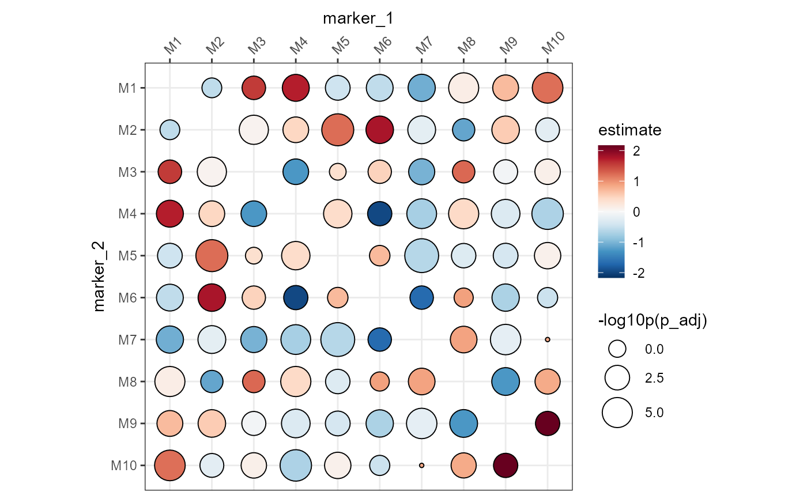

Plot a colocalization heatmap
ColocalizationHeatmap.RdDraws a heatmap of some summary statistic between marker pairs stored in a
tbl_df. A typical use case is to show the estimates of a differential
colocalization analysis test (RunDCA).
Usage
ColocalizationHeatmap(
data,
marker1_col = "marker_1",
marker2_col = "marker_2",
value_col = "estimate",
size_col = "p_adj",
size_col_transform = NULL,
size_range = c(0.1, 3),
colors = c("#053061", "#2166AC", "#4393C3", "#92C5DE", "#D1E5F0", "#F7F7F7", "#FDDBC7",
"#F4A582", "#D6604D", "#B2182B", "#67001F"),
cluster_rows = TRUE,
cluster_cols = TRUE,
clustering_distance_rows = "euclidean",
clustering_distance_cols = "euclidean",
clustering_method = "complete",
type = c("tiles", "dots"),
return_plot_data = FALSE,
symmetrise = TRUE,
legend_range = NULL,
legend_title = "",
...
)Arguments
- data
A
tbl_df- marker1_col
The name of the column with the first marker
- marker2_col
The name of the column with the second marker
- value_col
The name of the column with numeric values to plot, such as the estimate of a differential analysis test.
- size_col
The name of a column with numeric values to scale the dots by. This is only used when
type = "dots".- size_col_transform
A function to transform the values in
size_col. For instance, if the size_col values are p-values, you can use\(x) {-log10(x)}to transform them to a more interpretative scale. Note that the size legend label will be the value forsize_colwith a "_transformed" suffix. The label can be changed manually after plotting. See examples below.- size_range
A numeric vector of length 2 with dot size range.
- colors
A character vector with colors to create a color scale that the
value_colare mapped to.- cluster_rows, cluster_cols
A logical value indicating whether to cluster the rows and/or columns.
- clustering_distance_rows, clustering_distance_cols
The distance method to use for clustering rows and columns. Can be any method accepted by
dist.- clustering_method
The clustering method to use. Can be any method accepted by
hclust.- type
The type of plot to draw. Can be
"tiles"for a typical heatmap where each marker pair corresponds to a filled tile or"dots"for a "dot plot". In the latter, the sizes of the dots are scaled by thesize_colcolumn. This representation has the added advantage that size differences can be used to highlight other important information, such as significance. The dot plot is aggplotobject which can be easily modified to customize the style.- return_plot_data
Return data formatted for plotting instead of drawing the heatmap.
- symmetrise
Set to
TRUEif only the lower or upper triangle of marker combinations exist indata, each row will then be mirrored to fill the missing triangle of the heatmap.- legend_range
A numeric vector of length 2 with the range of the legend. If NULL, the range is set to the maximum absolute value of the data. If a value is outside this range, it is set to the closest legend range limit.
- legend_title
The title of the legend
- ...
Parameters passed to
pheatmap
Input
The input data should be a tbl_df object with at least these three columns:
A column with the first marker name.
A column with the second marker name.
A column with the numeric value to plot, such as the estimate of a differential analysis test or colocalization scores.
Each marker pair can only appear once in the data. This means that if you ran the test across multiple groups, you need to subset the data first.
Examples
library(pixelatorR)
library(dplyr)
library(ggplot2)
# Create a table with artificial DCA results
# for the example
set.seed(123)
dca_markers <- tidyr::expand_grid(
marker_1 = paste0("M", 1:10),
marker_2 = paste0("M", 1:10)
) %>%
filter(marker_1 > marker_2) %>%
mutate(estimate = rnorm(n(), 0, 1), p_adj = 10^(-rnorm(n(), 3, 2)))
dca_markers
#> # A tibble: 45 × 4
#> marker_1 marker_2 estimate p_adj
#> <chr> <chr> <dbl> <dbl>
#> 1 M2 M1 -0.560 0.176
#> 2 M2 M10 -0.230 0.00639
#> 3 M3 M1 1.56 0.00858
#> 4 M3 M2 0.0705 0.0000275
#> 5 M3 M10 0.129 0.00147
#> 6 M4 M1 1.72 0.000311
#> 7 M4 M2 0.461 0.00114
#> 8 M4 M3 -1.27 0.00122
#> 9 M4 M10 -0.687 0.00000183
#> 10 M5 M1 -0.446 0.00283
#> # ℹ 35 more rows
# Typical heatmap
ColocalizationHeatmap(dca_markers)
# Skip symmetrisation
ColocalizationHeatmap(dca_markers, symmetrise = FALSE)
# Typical dot plot
# Note that the size legend title needs to be set manually
ColocalizationHeatmap(
dca_markers,
type = "dots",
size_range = c(1, 10),
size_col_transform = \(x) {
-log10(x)
}
) &
labs(size = "-log10p(p_adj)")
# We can specify the order of the markers with factor levels
# but we need to turn off the clustering
ColocalizationHeatmap(
dca_markers %>%
mutate(
marker_1 = factor(marker_1, levels = paste0("M", 1:10)),
marker_2 = factor(marker_2, levels = paste0("M", 1:10))
),
type = "dots",
size_range = c(1, 10),
size_col_transform = \(x) {
-log10(x)
},
cluster_rows = FALSE,
cluster_cols = FALSE
) &
labs(size = "-log10p(p_adj)")

# If there are multiple comparisons per marker pair, we need to subset
# the data first
dca_markers_two_tests <- bind_rows(
dca_markers %>% mutate(refrence = "ctrl", target = "stim1"),
dca_markers %>% mutate(refrence = "ctrl", target = "stim2")
)
dca_markers_two_tests
#> # A tibble: 90 × 6
#> marker_1 marker_2 estimate p_adj refrence target
#> <chr> <chr> <dbl> <dbl> <chr> <chr>
#> 1 M2 M1 -0.560 0.176 ctrl stim1
#> 2 M2 M10 -0.230 0.00639 ctrl stim1
#> 3 M3 M1 1.56 0.00858 ctrl stim1
#> 4 M3 M2 0.0705 0.0000275 ctrl stim1
#> 5 M3 M10 0.129 0.00147 ctrl stim1
#> 6 M4 M1 1.72 0.000311 ctrl stim1
#> 7 M4 M2 0.461 0.00114 ctrl stim1
#> 8 M4 M3 -1.27 0.00122 ctrl stim1
#> 9 M4 M10 -0.687 0.00000183 ctrl stim1
#> 10 M5 M1 -0.446 0.00283 ctrl stim1
#> # ℹ 80 more rows
# This will now fail
if (FALSE) { # \dontrun{
ColocalizationHeatmap(dca_markers_two_tests)
} # }
# We need to subset the data first
ColocalizationHeatmap(
dca_markers_two_tests %>%
filter(target == "stim1")
)